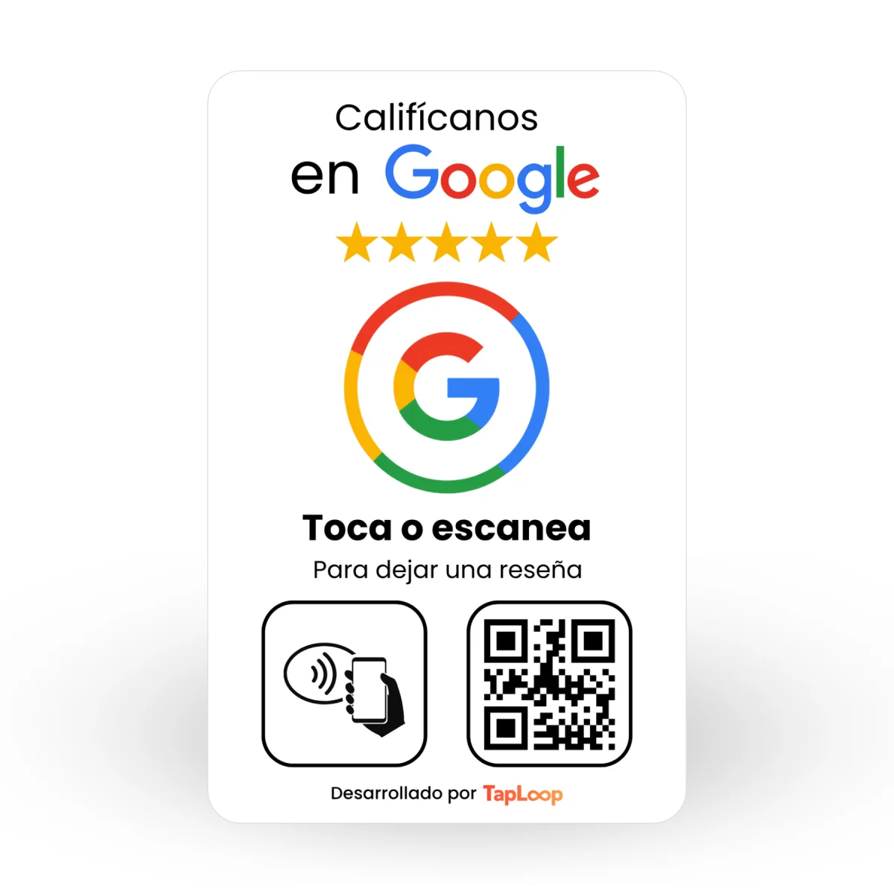

Envío gratis

Tarjeta NFC
Tarjeta NFC personalizada con perfil digital incluido.
Ver producto Solicitar cotizaciónPuebla
En Puebla conviven la industria automotriz, las universidades y un comercio muy activo. Comparte tu contacto con un toque y deja una presentación moderna en cada reunión.
Envío gratis a Puebla
Todas incluyen chip NFC, código QR y perfil digital editable. Sin apps y sin mensualidades.
Tarjeta NFC personalizada con perfil digital incluido.
Ver producto Solicitar cotización
Tarjeta NFC metálica premium con perfil digital incluido.
Ver producto Solicitar cotización
Tus clientes te califican en Google con un toque o el QR.
Ver producto Solicitar cotizaciónNetworking en Puebla
Puebla es uno de los centros automotrices más importantes del país, con una red de proveedores que gira alrededor de la planta de Volkswagen. A eso se suman universidades, hospitales y una zona de negocios que crece en Angelópolis y San Andrés Cholula.
Una tarjeta de presentación digital NFC es práctica para proveedores, médicos, académicos y comerciantes: comparte contacto, WhatsApp y redes en segundos y se actualiza sin reimprimir.
Ejecutivos de cuenta e ingenieros que visitan plantas y necesitan datos siempre al día.
Médicos y clínicas que comparten agenda, ubicación y WhatsApp con sus pacientes.
Profesores, investigadores y consultores que comparten perfil, publicaciones y redes.
Cobertura
Producimos tu tarjeta, configuramos el chip NFC y el código QR con tu perfil, y la enviamos por paquetería con seguimiento. La entrega estimada es de 3 a 5 días hábiles después de aprobar tu diseño, y el envío ya está incluido en el precio.
Es ideal para ferias y foros en el Centro Expositor de Puebla y para eventos universitarios y empresariales de la ciudad.
Así de fácil
Dudas frecuentes
Sí. Enviamos gratis a Puebla capital, San Andrés y San Pedro Cholula, Cuautlancingo y el resto del estado, con entrega estimada de 3 a 5 días hábiles.
Sí. El perfil digital puede incluir un botón para agendar cita, tu ubicación en Google Maps, WhatsApp y los datos del consultorio.
El precio depende del modelo (PVC o metálica), la cantidad y la personalización, por eso trabajamos por cotización. Todas incluyen perfil digital y envío gratis a Puebla. Solicita tu cotización sin compromiso. Es un pago único, sin mensualidades.
No. Quien recibe tu contacto solo acerca su celular a la tarjeta o escanea el código QR y tu perfil se abre en el navegador. Funciona con iPhone y con la mayoría de los Android.
La entrega estimada es de 3 a 5 días hábiles después de aprobar tu diseño. Si eliges diseño personalizado, primero te enviamos una propuesta por correo para validarla contigo.
¿Quieres saber más? Lee qué es una tarjeta NFC, compara PVC contra metal o revisa la guía completa de tarjetas NFC en México.